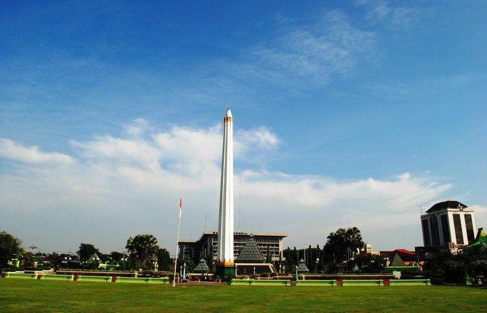

Contact
Sampai Jumpa di Mulut Gang
Hanya 500 meter dari Tugu Pahlawan, di tengah kota Surabaya.
Location
Lokasi
Kampoeng Lawas Maspati
Jl. Maspati Gang V dan VI, RW VI, Kecamatan Bubutan, Kota Surabaya, Jawa Timur
Patokan
Sekitar 500 meter dari Monumen Tugu Pahlawan, di antara Jalan Tembaan, Jalan Penghela, dan Jalan Bubutan.
Dikelola oleh
CV Reembun Nusantara
FAQ
Pertanyaan yang sering muncul
Apakah harus reservasi dulu?
Sangat disarankan, terutama untuk rombongan. Maspati adalah permukiman warga, jadi pemandu dan penampil perlu bersiap.
Bisa datang membawa mobil atau bus?
Kendaraan besar tidak bisa masuk gang. Parkir di luar kawasan, lalu lanjut berjalan kaki. Motor juga harus dimatikan dan dituntun di dalam gang.
Apakah cocok untuk kunjungan sekolah?
Cocok. Maspati banyak dipakai sebagai sumber belajar sejarah, sosial, dan lingkungan. Paket rombongan tersedia di Heritage Pass.
Bisakah menginap di sekitar kampung?
Losmen Asri berada di kawasan kampung. Pada kajian 2022 tarifnya sekitar Rp75.000 per malam. Pastikan ketersediaannya sebelum datang.